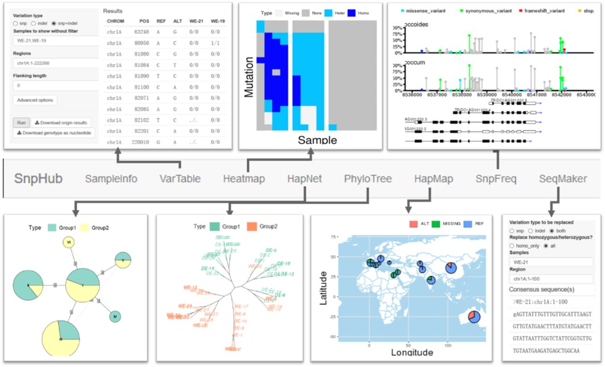

3. Channels
SnpHub supports the navigation of massive genomic variation data by users by specifying a list of samples and specific genomic regions and performing lightweight analyses and visualizations through the Shiny/R framework. Uniform, flexible interfaces for manipulating the query parameters are provided.
As many open-source bioinformatics tools are implemented as command lines or R packages, the Shiny/R framework could be extended for integrating new tools for processing genomic variation tables.
SnpHub provides user-friendly functions for navigating genomic variation data by implementing each of the functions on an independent tab page. Raw variation data and genomic sequence retrieval functions are provided in VarTable and SeqMaker. Versatile analysis and visualization functions are provided, including Heatmap, HapNet, PhyloTree, SnpFreq and HapMap. In all of these functions, SnpHub directly queries a gene ID as the corresponding genomic region directly based on the provided GFF3 file.
